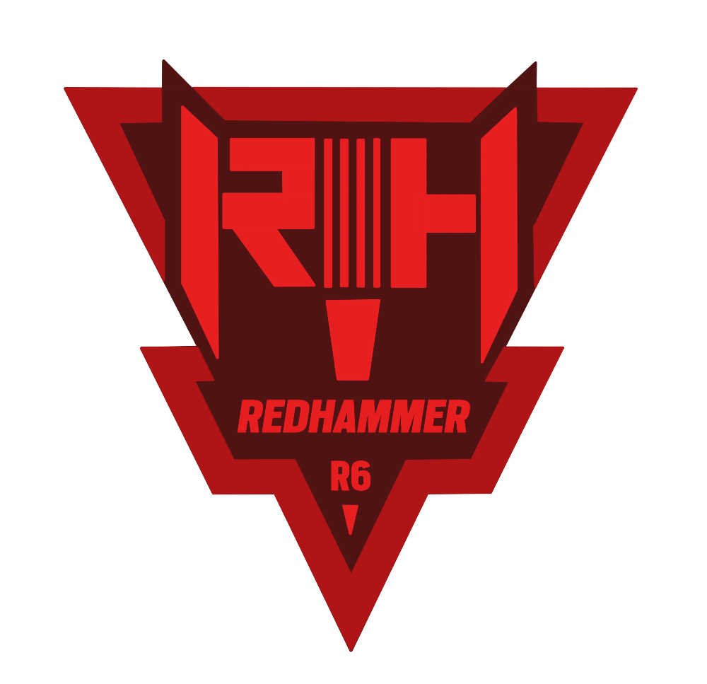

Név: Jalal El Fassi
Születési dátum:1966 Június 26.
Születési hely: Aroumd, Marokkó
“Lead by example and the mountain will move.”
Jalal El Fassi gyermekkorában olyan történetekből táplálkozott, melyek a Hegyőrségről, a legendás képzési létesítményről az Atlasz-hegységben meséltek. A Hegyőrség páratlan hírneve, valamint a híres "Kaidek" (parancsnok) lángoló emlékként égették be El Fassi emlékezetébe. El Fassi 18 évesen csatlakozott a GIGR-hez (Marokkói Királyi Őrség), természetes vezetői képességeit tűz alatt mutatta meg. Képessége, hogy hatékonyan irányítsa a szakosított zászlóaljakat a közös Transzszaharai Ellen-terrortámadás Kezdeményezés (TSCTP) műveletek során vezetett előléptetéséhez vezetett őrnaggyá. Szolgálata évei után a Hegyőrség uralkodó Parancsnoka kiválasztotta utódját: El Fassit, akinek tekintélyes, ugyanakkor etikus stílusa méltóvá tette a "Kaidek" címre. Impozáns jelenléte és szigorú értékrendje sikert hozott diplomásainak, és a Hegyőrség gyorsan elnyerte elismerését. A több ezer katonán keresztül, akik képeződtek vagy tanítottak a területén, tovább bizonyította kiválóságát. Évek során folytatott tárgyalások eredményeként ő üdvözölte az afrikai és a Közel-Keleti országok katonáit, erősítve a TSCTP tagjai és az Afrikai Tartalék Erő országai közötti szorosabb kapcsolatokat.
Szervezet: Redhammer